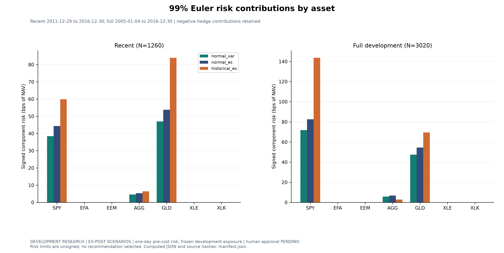

DEVELOPMENT RESEARCH / EX-POST SCENARIOS. Human validation and economic limits PENDING. Post-2016 scenarios use the frozen development exposure; these are not historical strategy results.
99% Euler risk contributions by asset

Historical crisis replays and an illustrative joint shock